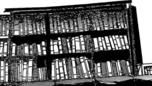
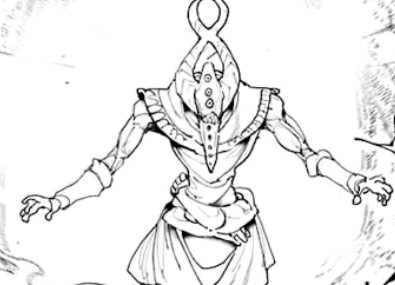
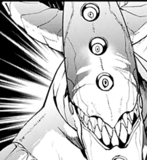
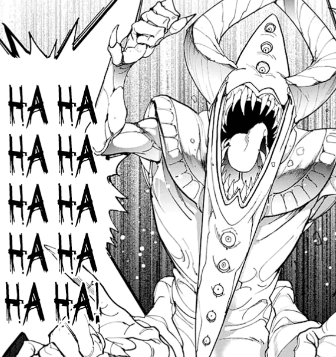
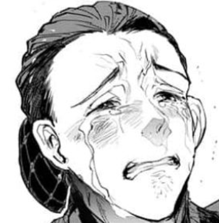

Surely, nothing beats your curiosity but the closer you reach the object, the more it resembled Nicholas's cottage. You look around the grass but don't spot a white flower. Weird.
You cautiously approach it and realize the door is slightly open. You feel danger ahead, so you fasten your hoodie on again and make your way to the side of the cottage. The hole to the secret entrance is still there, an area so small that only you could fit in.
You lunge slowly into the corner of the room where a bookshelf hides your presence away from the sight of the creature. You observe it carefully. Its horns are twisted, having several eyes and wearing human clothes. It moves with both feet and almost twice your size.
Suddenly, you remember the tattered, worn book in between the farthest section of the fantasy aisle. There was a description of a being with horns and a mask as a face... the book was titled 'A Demon's Folklore'.
You gasp and with the slightest movement, the bookshelf creaks, attracting the creature. It doesn't take long before it spots you, completely destroys the weak bookshelf and grabs you by the neck with its gobbly hands.
The force pulls down your hoodie and reveals your head. You expect it to handle your head first in any moment but it stood still for a while. Then, it's mouth opens wide revealing its numerous teeth and forms a sinister smile.
"A pureblood. Right within these empty woods?! WHAT LUCK!", it says, "You'll be better slightly roasted! Just like the good old days!"
It heads outside and creates a fire pit nearby. While gathering the fallen branches and bigger pieces of wood, you attempt to ask it some questions about what a pureblood is.
"HA! You've been living your whole life hiding! You're telling me that you know nothing of your fate?! Am I an idiot?" you anger him slightly.
"Please believe me! My family has never told me anything! They've just kept me hidden inside a mansion for years!"
"Mansion?!"
"Yes... the one beyond the cliff somewhere..."
"Yo-You! The only on-ones who can enter tho-those wo-woods are-" it stammers a bit and thinks for a while, "You really don't know anything, huh?"
It laughs sinisterly and tells you everything since you'll be eaten up anyway. It introduces itself as a lower-demon who couldn't afford eating any meat back in the demon's world while, a pureblood, was the most rarest, high-quality anyone could ask for. Your fate was two things: be used as bait since you also have a scent to attract prey or be eaten up by a demon. It almost finishes the contraption. 
With a smirk on its face it reveals, "YOU MUST BE THE KING'S HIDDEN CHILD, AREN'T YOU! THAT HUMAN LADY MUST'VE RAN HERE TO HIDE HER FAMILY! HAHAHAHAHA! AND TO THINK YOU LIVED IN THE ALTERNATE HOUSE THIS ENTIRE TIME! THEN MY THEORY WAS RIGHT, THIS IS JUST AN ALTERNATE WORLD TO THE DEMON'S WORLD."
The sun goes down almost half of the way but you forget your purpose, as you try to take it all in while he lights the fire. Is he saying the truth? So the book wasn't a myth? There's actually a demon's world? Still consumed with questions, it approaches you slowly, ready to slightly roast you before sending you to the afterlife.
It reaches out to get you slowly and a huge bullet pierces it's mask and it down the ground. You look to the side and spot Nicholas.
The demon was dead. He then approaches you and flips back your hoodie. With little to no time to explain, he hands you the potion and pleads you to rush back home while he takes the potion you were holding. Scared, you listen, thinking about other demons like it. But the more, you wanted to get away from all the thoughts you had.
You almost make it before sun set but alas as you enter in you watch the sun set and wave its final ray. Too late. Father doesn't get better. Mother gets angry at you and blames you.
Disappointed in yourself and for letting everyone around you down, you unveil your hoodie. Mother notices you were 'ripe' and realizes her mistake.
"I-I'm so sorry" she cries in front of you for the first time. Without understanding anything, she hugs you and you decide to forget about everything the demon said...
To be continued...
There's more choices to select and more truth to be revealed.